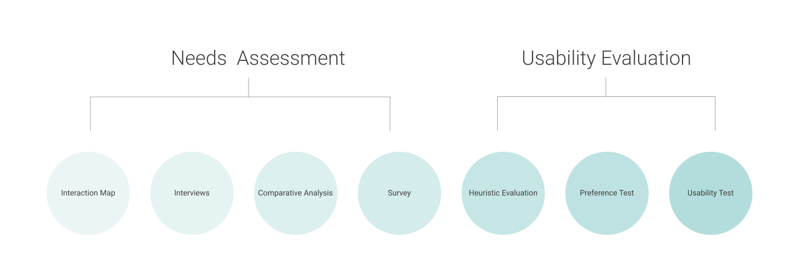
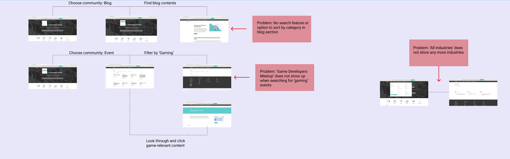
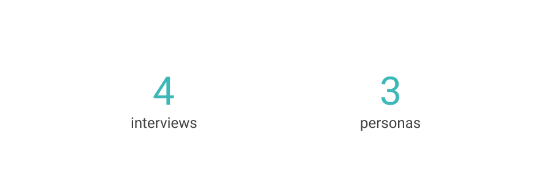
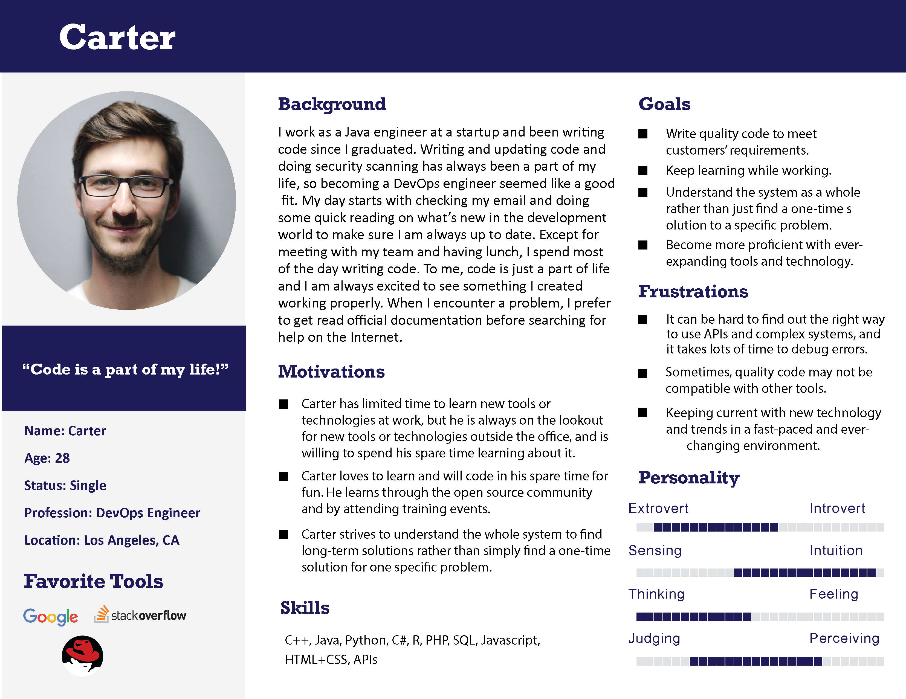
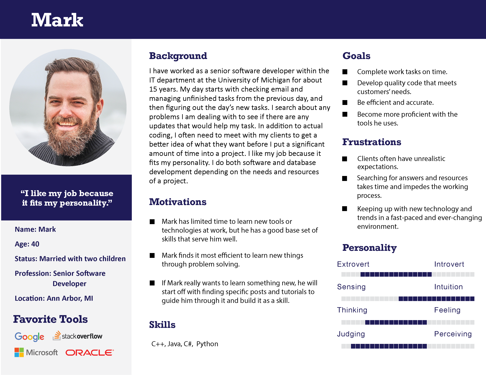
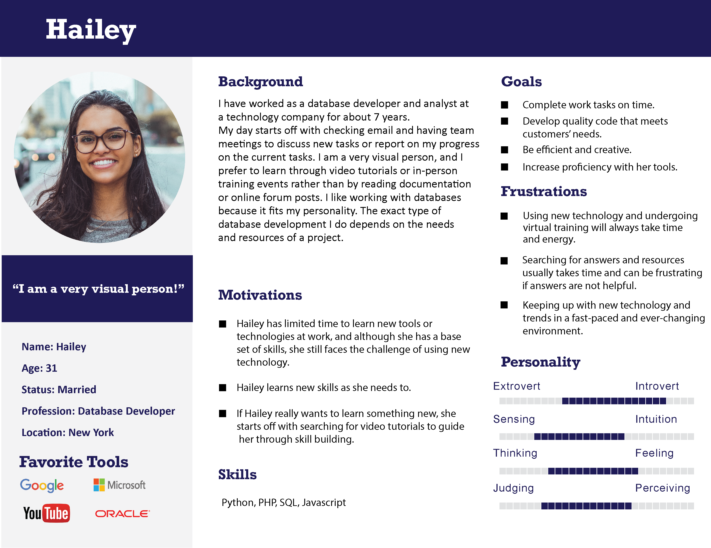

Overview
IBM Developer is a free web-based platform providing resources for users to learn skills, master technologies and collaborate with fellow developers. Net Promoter Score (NPS) from the previous research shows that there is a low satisfaction in the Community section.
Our goal is to understand developers’ behaviour, with a focus on community, from an external perspective.
Research Process
Interaction Map
This is the initial process for us to understand the information architecture of IBM Developer website and to identify the problems.

We found that there are three problems regarding community features and navigation. 
Interviews

Using the contextual inquiry method, we first interviewed four developers to understand their behaviours and habits, with a focus on their activities related to community. After the interviews, we conducted interpretation sessions on out notes, categorizing the findings and summarizing three key insights.



Based on our interviews with four developers, we generated three personas to empathize with our users.
We gained insights regarding developers' behaviours and their attitudes on community.
Firstly, most users start with general web searches even if they are looking for answers on a particular site such as Stack Overflow, and they care more about the content of websites than the interfaces. In terms of community, users typically search for pre-existing answers to specific questions and rarely actively participate by posting their own questions or answers. Also, developers generally only join communities or attend events directly related to their jobs, and rarely participate in online groups.
Comparative Analysis
This comparative analysis compares five competitors to IBM developer website. We evaluate the products in terms of the excellence of technical information, community features, and the ease of use on a scale matrix.
 The result of the analysis showes that Although IBM seems complicated in terms of layout and structure, it contains a great quantity of useful resources to benefit developers. Also, It is powerful for providing various resources and a strong community connection but lacks clear content categorization and navigation. Finally, IBM loses points on its poor searchability and complicated section layout.
The result of the analysis showes that Although IBM seems complicated in terms of layout and structure, it contains a great quantity of useful resources to benefit developers. Also, It is powerful for providing various resources and a strong community connection but lacks clear content categorization and navigation. Finally, IBM loses points on its poor searchability and complicated section layout.
Survey
In order to understand the users of IBM Developer website, we used Qualtrics to design survey questions concentrated on the behavioral and attitudinal aspect of IBM users.
 Currently, we are still in the process of data analysis, and the final results will be out soon.
Currently, we are still in the process of data analysis, and the final results will be out soon.